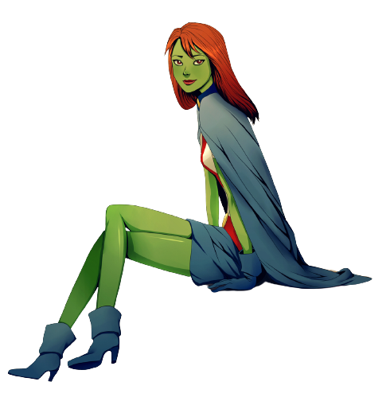

Informações da Miss Marte
Voltar
Equipes DC

Criação da Miss Marte
Miss Marte, também conhecida como Megan Morse ou Megan Wheeler, é uma personagem dos quadrinhos
da DC Comics. Ela foi criada por Geoff Johns e Tony S. Daniel, fazendo sua primeira
aparição em Teen Titans #37, lançado em 2006.
A Personagem Miss Marte
Miss Marte é uma marciana branca, membro da raça extraterrestre conhecida como
Marcianos. Seu nome verdadeiro é M'gann M'orzz e ela fugiu de seu planeta natal, Marte, para a Terra em busca de uma vida melhor. Ela se disfarça como uma adolescente humana e adota a identidade de Megan Morse ou Megan Wheeler.
Miss Marte é conhecida por suas habilidades telepáticas, capacidade de mudar de forma e habilidades de voo. Ela se junta aos Jovens Titãs e posteriormente à Liga da Justiça, onde luta ao lado de outros super-heróis para proteger o mundo de ameaças cósmicas e terrestres.
Quadrinhos Importantes da Miss Marte
Miss Marte teve várias histórias importantes nos quadrinhos, explorando sua origem, suas relações com outros personagens e seu papel como heroína. Aqui estão alguns dos quadrinhos mais relevantes da personagem:
"Teen Titans" (2003-2011):
Escrito por Geoff Johns e ilustrado por Mike McKone, esta série segue as aventuras dos Jovens Titãs, incluindo Miss Marte, enquanto enfrentam ameaças e lidam com questões pessoais.
"Young Justice" (2011-2013):
Escrito por Greg Weisman e ilustrado por Christopher Jones, esta série em quadrinhos apresenta uma equipe de super-heróis adolescentes, incluindo Miss Marte, enquanto lutam contra o crime e enfrentam desafios em suas vidas pessoais.
Adaptações em Outras Mídias
Miss Marte também apareceu em várias adaptações animadas, trazendo sua história emocionante para além dos quadrinhos. Aqui estão algumas das mais notáveis:
Série animada "Young Justice" (2010-presente):
Miss Marte é um dos principais membros da equipe de super-heróis adolescentes, enfrentando ameaças e lidando com questões de identidade e pertencimento.
Série de TV "Supergirl" (2015-2021):
A personagem de Miss Marte, interpretada por Sharon Leal, aparece nesta série, desempenhando um papel importante nas histórias relacionadas aos marcianos e à agência governamental DEO.
Habilidades da Miss Marte
Miss Marte possui uma série de habilidades únicas, características de sua raça marciana. Aqui estão algumas de suas principais habilidades:
Telepatia:
Ela é uma poderosa telepata, capaz de ler mentes, projetar seus pensamentos na mente dos outros e se comunicar telepaticamente com outras pessoas.
Mudança de Forma:
Miss Marte pode alterar sua aparência física para se transformar em qualquer pessoa ou objeto que desejar, o que a torna uma mestra do disfarce.
Força e Resistência Sobrehumanas:
Ela possui uma força e resistência sobre-humanas, permitindo que ela enfrente adversários poderosos e sobreviva a condições extremas.
Voo:
Miss Marte pode voar com a ajuda de suas asas telecinéticas, permitindo-lhe atravessar o céu e se mover rapidamente.
Conclusão
Miss Marte é uma personagem fascinante e poderosa da DC Comics, trazendo uma perspectiva alienígena e habilidades únicas para o universo dos super-heróis. Como uma marciana branca, ela se esconde na Terra, assumindo a identidade de Megan Morse ou Megan Wheeler. Suas habilidades telepáticas, capacidade de mudança de forma e voo a tornam uma aliada valiosa na luta contra o crime e na proteção do mundo. Ao longo dos quadrinhos e adaptações animadas, Miss Marte tem sido uma presença cativante, explorando temas de identidade, pertencimento e descoberta pessoal. Com seu caráter complexo e suas habilidades intrigantes, Miss Marte continua a conquistar fãs e a inspirar com suas histórias envolventes no universo da DC Comics.